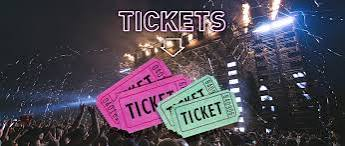
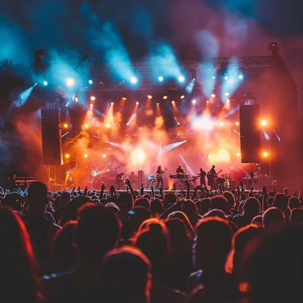

Programa
| Horario | Descripción | |
|---|---|---|
| 10:00 | Recepción de bienvenida | |
| 12:00 | Presentación de eventos | |
| 14:00 | Comida a cargo de Hazian | |
| 17:00 | Apertura de espacios interactivos | |
| 18:30 | Actuación pop de "Sofía Reyes" | |
| 20:00 | Banda de rock alternativo "Los Planetas" | |
| 21:30 | Música electrónica a cargo de DJ Zedd | |
El esperado festival EcoSonidos reunirá a grandes referentes de la música actual el próximo mes en el Estadio Metropolitano BBK Kuna. Este vibrante concierto en vivo contará con las actuaciones consecutivas de la multipremiada cantante de pop Sofía Reyes, la enérgica banda de rock alternativo Los Planetas y el aclamado productor de música electrónica DJ Zedd. La producción del evento promete una experiencia audiovisual sin precedentes, equipada con pantallas LED de última generación, efectos de luces láser y una acústica perfectamente optimizada para hacer vibrar a miles de fanáticos en una noche que promete ser inolvidable.
El espectáculo está diseñado como un viaje musical continuo donde los artistas fusionarán sus estilos en colaboraciones sorpresa preparadas exclusivamente para esta fecha. Los asistentes no solo disfrutarán de los mayores éxitos de cada repertorio, sino también de zonas gastronómicas locales y espacios interactivos antes del inicio del show.
Las entradas ya se encuentran en su última fase de venta general a través de los canales oficiales del recinto.
Se recomienda al público asistir con bastante anticipación para superar los controles de acceso y asegurar la mejor ubicación en la pista.
